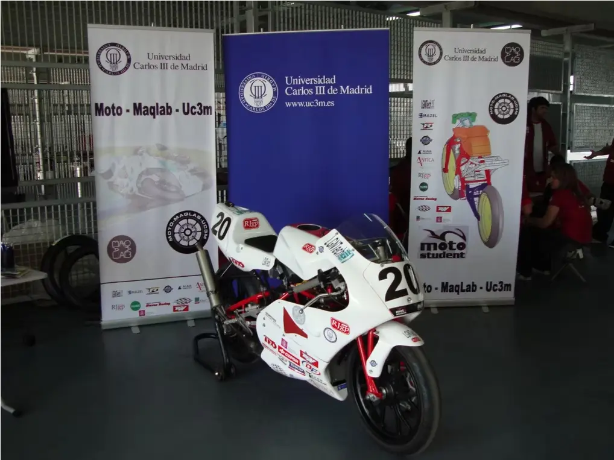
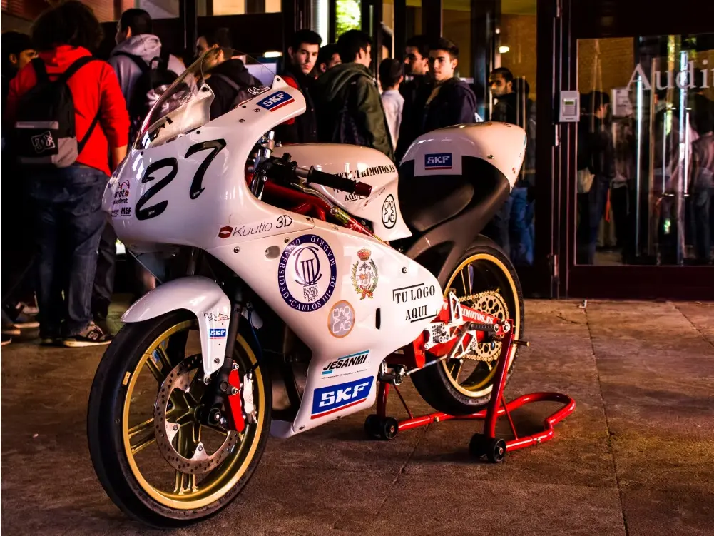
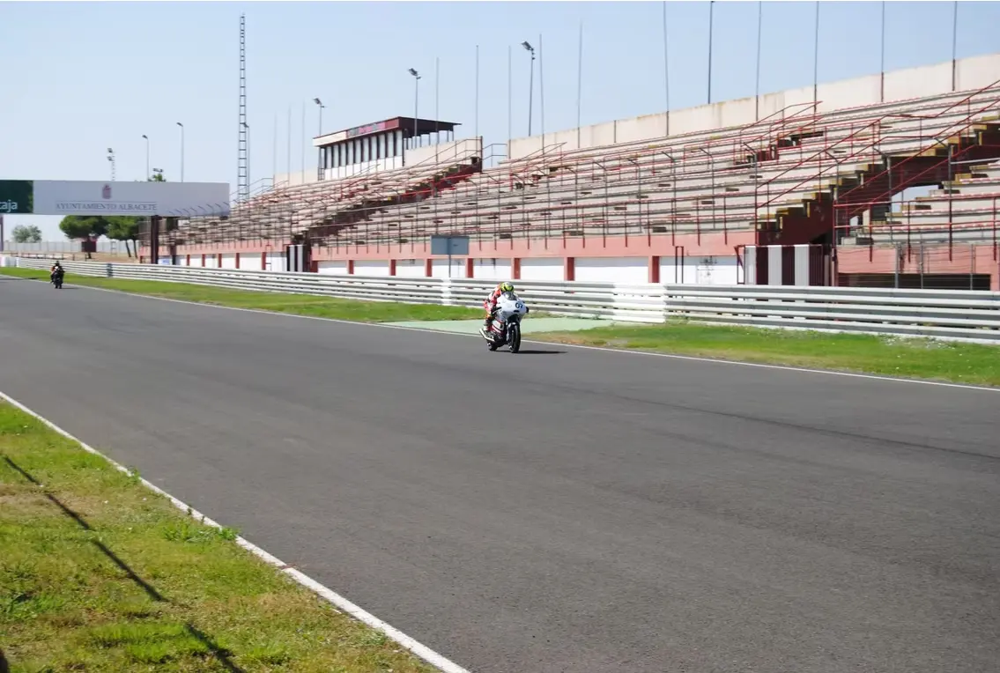
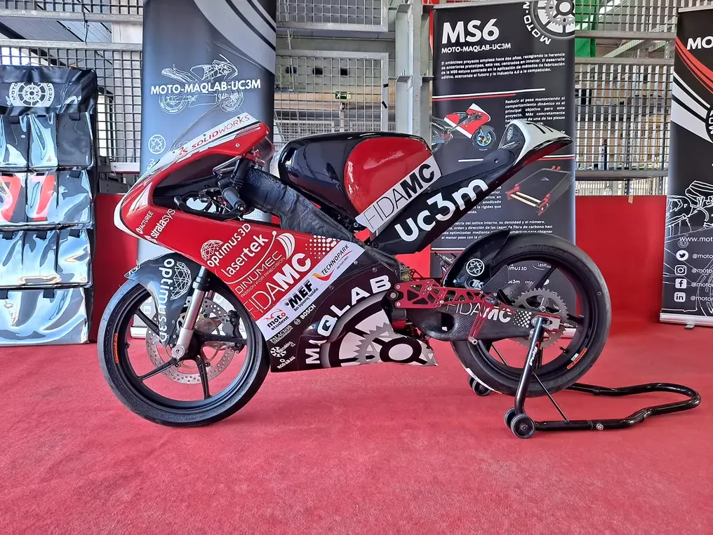

MÁS QUE
INGENIERÍA
Somos MotoMaqLab, el equipo de moto de la UC3M. Estudiantes de la Universidad Carlos III de Madrid unidos por la pasión, la velocidad y el desafío de construir la moto del futuro.
Nuestra Filosofía
No solo construimos motos. Formamos la próxima generación de talentos.
Pasión por el Motor
Vivimos cada carrera con la intensidad que merece. La adrenalina y el deseo de superación son el combustible.
Ingeniería de Precisión
Aplicamos los más altos estándares técnicos. Desde el diseño hasta la fabricación.
Trabajo en Equipo
El éxito en la pista es el resultado de la coordinación perfecta. Somos una familia que se apoya.
¿Qué es MotoStudent?
La mayor competición de ingeniería universitaria sobre dos ruedas
MotoStudent es una competición internacional de ingeniería en la que equipos universitarios de todo el mundo diseñan, fabrican y compiten con un prototipo de moto de carreras. Organizada por la Moto Engineering Foundation en España, MotoStudent desafía a estudiantes a aplicar sus conocimientos en un proyecto real: desde el diseño CAD y la simulación hasta la fabricación y las pruebas en circuito.
En MotoMaqLab UC3M, somos el equipo MotoStudent de la Universidad Carlos III de Madrid. Desde 2009, más de 70 estudiantes de ingeniería trabajamos cada temporada para llevar nuestra moto a la pista. Nuestro equipo MotoStudent en Madrid ha logrado 6 premios a lo largo de nuestra historia, incluyendo reconocimientos a la innovación, el diseño industrial y la presentación del proyecto.
Competición Internacional
Equipos MotoStudent de universidades de toda Europa y el mundo compiten en el circuito de Motorland Aragón, España.
Ingeniería Real
Diseño, simulación, fabricación y pruebas dinámicas. MotoStudent exige dominar todas las fases del desarrollo de una moto.
MotoStudent 2025–2027
Nuestra MS9 será el siguiente reto. Trabajamos en un prototipo que combinará innovación en materiales compuestos y aerodinámica avanzada.
Nuestra Historia
Del aula a la pole position.
EL ORIGEN
Tras la creación de MotoStudent en 2009, se fundó el equipo con la ayuda del grupo de investigación MAQLAB de la UC3M. El primer prototipo del equipo, una 2T con chasis tubular, fue ganador del premio a la mejor innovación industrial por incorporar un sistema de suspensión TeleLever regulable.

REESTRUCTURACIÓN
En este año se llevó a cabo una reestructuración del equipo. Se logró competir en MotoStudent III con la MS3, un prototipo de 4T también con chasis tubular.

MS4: PREMIO A MEJOR DISEÑO
En Motostudent IV, la MS4 ganó el primer premio al mejor diseño industrial por su chasis y basculante monobloque en aluminio. También obtuvo dos segundos premios, a la innovación y al proyecto industrial.

MS6: INNOVACIÓN MULTIFÍSICA
El equipo participó en MotoStudent VI con su MS6, destacando basculante de carbono y ganando el Altair Innovative Challenge 2020 en la optimización multifísica de una moto de competición. En este prototipo se trabajaron nuevos métodos de fabricación en materiales compuestos con núcleo en impresión 3D (Ultem 1010).

MS7: EL RETO DEL CARBONO
Nuestro proyecto MS7 presentó un chasis tubular de fibra de carbono, único en el mundo. Obtuvimos el quinto puesto en la categoría de innovación y seguimos empujando los límites de la ingeniería.

MS8: EL PROYECTO ESTRELLA
La MS8 consta de un chasis de fibra de carbono de doble viga huevo. La Clave: Integración
total. La estructura no solo sostiene la moto, sino que actúa como conducto de admisión de
aire, optimizando la aerodinámica interna y reduciendo el peso global.
Obtuvimos
el segundo puesto en Pitch Presentation: Reconocimiento internacional a nuestra capacidad de
comunicación, modelo de negocio , viabilidad industrial del proyecto y defensa de la
innovación realizada a lo largo de la edición.

Palmarés y Reconocimientos
Innovación industrial
Sistema de suspensión TeleLever regulable | MS 1
Diseño industrial
Chasis y basculante monobloque en aluminio | MS 4
Altair Innovative Challenge 2020
Nuevos métodos de fabricación en materiales compuestos con núcleo impreso en 3D (Ultem 1010) | MS 6
Pitch Presentation
Reconocimiento internacional a nuestra capacidad de comunicación, modelo de negocio, viabilidad industrial del proyecto y defensa de la innovación realizada a lo largo de la edición | MS 8
Innovación industrial
MS 4
Proyecto industrial
MS 4